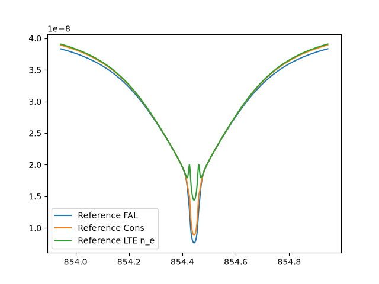

Note
Go to the end to download the full example code.
Computing a simple NLTE 8542 line profile in a FAL C atmosphere
First, we import everything we need. Lightweaver is typically imported as lw, but things like the library of model atoms and Fal atmospheres need to be imported separately.
from lightweaver.fal import Falc82
from lightweaver.rh_atoms import H_6_atom, C_atom, O_atom, Si_atom, Al_atom, \
CaII_atom, Fe_atom, He_9_atom, MgII_atom, N_atom, Na_atom, S_atom
import lightweaver as lw
import matplotlib.pyplot as plt
import time
import numpy as np
Now, we define the functions that will be used in our spectral synthesise. First synth_8542 which synthesises and returns the line given by an atmosphere.
def synth_8542(atmos, conserve, useNe, wave):
'''
Synthesise a spectral line for given atmosphere with different
conditions.
Parameters
----------
atmos : lw.Atmosphere
The atmospheric model in which to synthesise the line.
conserve : bool
Whether to start from LTE electron density and conserve charge, or
simply use from the electron density present in the atomic model.
useNe : bool
Whether to use the electron density present in the model as the
starting solution, or compute the LTE electron density.
wave : np.ndarray
Array of wavelengths over which to resynthesise the final line
profile for muz=1.
Returns
-------
ctx : lw.Context
The Context object that was used to compute the equilibrium
populations.
Iwave : np.ndarray
The intensity at muz=1 for each wavelength in `wave`.
'''
# Configure the atmospheric angular quadrature
atmos.quadrature(5)
# Configure the set of atomic models to use.
aSet = lw.RadiativeSet([H_6_atom(), C_atom(), O_atom(), Si_atom(),
Al_atom(), CaII_atom(), Fe_atom(), He_9_atom(),
MgII_atom(), N_atom(), Na_atom(), S_atom()
])
# Set H and Ca to "active" i.e. NLTE, everything else participates as an
# LTE background.
aSet.set_active('H', 'Ca')
# Compute the necessary wavelength dependent information (SpectrumConfiguration).
spect = aSet.compute_wavelength_grid()
# Either compute the equilibrium populations at the fixed electron density
# provided in the model, or iterate an LTE electron density and compute the
# corresponding equilibrium populations (SpeciesStateTable).
if useNe:
eqPops = aSet.compute_eq_pops(atmos)
else:
eqPops = aSet.iterate_lte_ne_eq_pops(atmos)
# Configure the Context which holds the state of the simulation for the
# backend, and provides the python interface to the backend.
# Feel free to increase Nthreads to increase the number of threads the
# program will use.
ctx = lw.Context(atmos, spect, eqPops, conserveCharge=conserve, Nthreads=1)
# Iterate the Context to convergence (using the iteration function now
# provided by Lightweaver)
lw.iterate_ctx_se(ctx)
# Update the background populations based on the converged solution and
# compute the final intensity for mu=1 on the provided wavelength grid.
eqPops.update_lte_atoms_Hmin_pops(atmos)
Iwave = ctx.compute_rays(wave, [atmos.muz[-1]], stokes=False)
return ctx, Iwave
The wavelength grid to output the final synthesised line on.
wave = np.linspace(853.9444, 854.9444, 1001)
Load an lw.Atmosphere object containing the FAL C atmosphere with 82 points in depth, before synthesising the Ca II 8542 AA line profile using:
The given electron density.
The electron density charge conserved from a starting LTE solution.
The LTE electron density.
These results are then plotted.
atmosRef = Falc82()
ctxRef, IwaveRef = synth_8542(atmosRef, conserve=False, useNe=True, wave=wave)
atmosCons = Falc82()
ctxCons, IwaveCons = synth_8542(atmosCons, conserve=True, useNe=False, wave=wave)
atmosLte = Falc82()
ctx, IwaveLte = synth_8542(atmosLte, conserve=False, useNe=False, wave=wave)
plt.plot(wave, IwaveRef, label='Reference FAL')
plt.plot(wave, IwaveCons, label='Reference Cons')
plt.plot(wave, IwaveLte, label='Reference LTE n_e')
plt.legend()
plt.show()

-- Iteration 0:
dJ = 1.00e+00
(Lambda iterating background)
-- Iteration 6:
dJ = 2.44e+00
H delta = 5.9862e-01
Ca delta = 2.2187e-01
-- Iteration 12:
dJ = 3.76e-01
H delta = 2.0284e-01
Ca delta = 1.5172e-01
-- Iteration 17:
dJ = 1.59e-01
H delta = 8.1016e-02
Ca delta = 7.6438e-02
-- Iteration 23:
dJ = 1.01e-01
H delta = 5.4119e-02
Ca delta = 4.4901e-02
-- Iteration 29:
dJ = 8.10e-02
H delta = 4.8780e-02
Ca delta = 3.0982e-02
-- Iteration 35:
dJ = 7.39e-02
H delta = 4.4487e-02
Ca delta = 2.4070e-02
-- Iteration 41:
dJ = 6.76e-02
H delta = 3.8645e-02
Ca delta = 1.8890e-02
-- Iteration 47:
dJ = 6.09e-02
H delta = 3.2592e-02
Ca delta = 1.4413e-02
-- Iteration 53:
dJ = 5.21e-02
H delta = 2.5904e-02
Ca delta = 1.0306e-02
-- Iteration 59:
dJ = 4.12e-02
H delta = 2.1605e-02
Ca delta = 6.9313e-03
-- Iteration 65:
dJ = 2.93e-02
H delta = 1.6129e-02
Ca delta = 4.3743e-03
-- Iteration 71:
dJ = 1.94e-02
H delta = 1.0889e-02
Ca delta = 2.6195e-03
-- Iteration 77:
dJ = 1.18e-02
H delta = 6.7548e-03
Ca delta = 1.5100e-03
-- Iteration 83:
dJ = 6.91e-03
H delta = 3.9938e-03
Ca delta = 8.5477e-04
-- Iteration 89:
dJ = 3.92e-03
H delta = 2.2836e-03
Ca delta = 4.7986e-04
-- Iteration 95:
dJ = 2.18e-03
H delta = 1.2688e-03
Ca delta = 2.6115e-04
--------------------------------------------------------------------------------
Final Iteration: 98
--------------------------------------------------------------------------------
dJ = 1.61e-03
H delta = 9.3709e-04
Ca delta = 1.9178e-04
--------------------------------------------------------------------------------
Context converged to statistical equilibrium in 98 iterations after 3.86 s.
--------------------------------------------------------------------------------
LTE Iterations 1 (-- slowest convergence)
-- Iteration 0:
dJ = 1.00e+00
(Lambda iterating background)
-- Iteration 6:
dJ = 1.39e+00
H delta = 5.9357e-01
Ca delta = 2.1932e-01
ne delta = 7.7397e-05
-- Iteration 11:
dJ = 4.19e-01
H delta = 2.9789e-01
Ca delta = 1.5015e-01
ne delta = 2.3071e-12
-- Iteration 16:
dJ = 1.74e-01
H delta = 1.3578e-01
Ca delta = 7.8038e-02
ne delta = 1.9713e-14
-- Iteration 21:
dJ = 1.16e-01
H delta = 7.2243e-02
Ca delta = 4.9454e-02
ne delta = -1.7012e-16
-- Iteration 26:
dJ = 9.15e-02
H delta = 5.6312e-02
Ca delta = 3.4462e-02
ne delta = 9.4837e-16
-- Iteration 31:
dJ = 7.99e-02
H delta = 4.9402e-02
Ca delta = 2.5452e-02
ne delta = 3.5202e-16
-- Iteration 36:
dJ = 7.25e-02
H delta = 4.5506e-02
Ca delta = 1.9464e-02
ne delta = 7.0404e-16
-- Iteration 41:
dJ = 6.74e-02
H delta = 4.0647e-02
Ca delta = 1.4894e-02
ne delta = -1.7601e-16
-- Iteration 46:
dJ = 6.29e-02
H delta = 3.8008e-02
Ca delta = 1.1034e-02
ne delta = 1.0207e-15
-- Iteration 51:
dJ = 5.76e-02
H delta = 3.5558e-02
Ca delta = 7.7594e-03
ne delta = 3.5202e-16
-- Iteration 56:
dJ = 5.12e-02
H delta = 3.2231e-02
Ca delta = 5.2186e-03
ne delta = 8.5059e-16
-- Iteration 61:
dJ = 4.39e-02
H delta = 2.8157e-02
Ca delta = 3.3670e-03
ne delta = 7.1128e-16
-- Iteration 66:
dJ = 3.57e-02
H delta = 2.3419e-02
Ca delta = 2.5199e-03
ne delta = 1.8802e-15
-- Iteration 71:
dJ = 2.83e-02
H delta = 1.8773e-02
Ca delta = 2.1619e-03
ne delta = 0.0000e+00
-- Iteration 76:
dJ = 2.14e-02
H delta = 1.4332e-02
Ca delta = 1.7859e-03
ne delta = 1.3545e-16
-- Iteration 81:
dJ = 1.56e-02
H delta = 1.0532e-02
Ca delta = 1.3690e-03
ne delta = 7.0404e-16
-- Iteration 86:
dJ = 1.11e-02
H delta = 7.4702e-03
Ca delta = 9.9731e-04
ne delta = 2.7577e-15
-- Iteration 91:
dJ = 7.58e-03
H delta = 5.1388e-03
Ca delta = 6.9859e-04
ne delta = 1.1281e-15
-- Iteration 96:
dJ = 5.11e-03
H delta = 3.4704e-03
Ca delta = 4.7975e-04
ne delta = 3.5202e-16
-- Iteration 101:
dJ = 3.41e-03
H delta = 2.3173e-03
Ca delta = 3.2383e-04
ne delta = 7.0404e-16
-- Iteration 106:
dJ = 2.26e-03
H delta = 1.5364e-03
Ca delta = 2.1597e-04
ne delta = 3.4024e-16
-- Iteration 111:
dJ = 1.49e-03
H delta = 1.0129e-03
Ca delta = 1.4295e-04
ne delta = 3.8078e-15
--------------------------------------------------------------------------------
Final Iteration: 112
--------------------------------------------------------------------------------
dJ = 1.37e-03
H delta = 9.3152e-04
Ca delta = 1.3153e-04
ne delta = 0.0000e+00
--------------------------------------------------------------------------------
Context converged to statistical equilibrium in 112 iterations after 4.64 s.
--------------------------------------------------------------------------------
LTE Iterations 1 (-- slowest convergence)
-- Iteration 0:
dJ = 1.00e+00
(Lambda iterating background)
-- Iteration 6:
dJ = 1.69e+00
H delta = 5.9317e-01
Ca delta = 2.6750e-01
-- Iteration 12:
dJ = 2.89e-01
H delta = 1.4959e-01
Ca delta = 1.0630e-01
-- Iteration 18:
dJ = 1.32e-01
H delta = 7.3022e-02
Ca delta = 4.7099e-02
-- Iteration 24:
dJ = 9.42e-02
H delta = 5.5032e-02
Ca delta = 3.0148e-02
-- Iteration 30:
dJ = 7.69e-02
H delta = 4.9518e-02
Ca delta = 2.2515e-02
-- Iteration 36:
dJ = 6.80e-02
H delta = 4.4035e-02
Ca delta = 1.7365e-02
-- Iteration 42:
dJ = 6.06e-02
H delta = 3.6520e-02
Ca delta = 1.3000e-02
-- Iteration 48:
dJ = 5.17e-02
H delta = 2.7822e-02
Ca delta = 9.1776e-03
-- Iteration 54:
dJ = 4.09e-02
H delta = 2.1105e-02
Ca delta = 6.0669e-03
-- Iteration 60:
dJ = 2.87e-02
H delta = 1.5378e-02
Ca delta = 3.7084e-03
-- Iteration 66:
dJ = 1.86e-02
H delta = 1.0214e-02
Ca delta = 2.2082e-03
-- Iteration 72:
dJ = 1.15e-02
H delta = 6.3636e-03
Ca delta = 1.2646e-03
-- Iteration 78:
dJ = 6.58e-03
H delta = 3.6913e-03
Ca delta = 7.0107e-04
-- Iteration 84:
dJ = 3.70e-03
H delta = 2.0806e-03
Ca delta = 3.8579e-04
-- Iteration 90:
dJ = 2.04e-03
H delta = 1.1533e-03
Ca delta = 2.1069e-04
--------------------------------------------------------------------------------
Final Iteration: 92
--------------------------------------------------------------------------------
dJ = 1.67e-03
H delta = 9.4479e-04
Ca delta = 1.7206e-04
--------------------------------------------------------------------------------
Context converged to statistical equilibrium in 92 iterations after 3.58 s.
--------------------------------------------------------------------------------
LTE Iterations 1 (He slowest convergence)
Total running time of the script: (0 minutes 13.016 seconds)